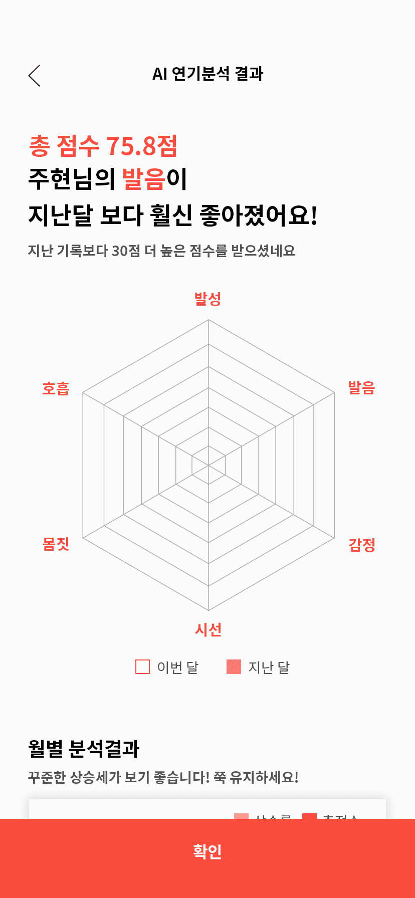
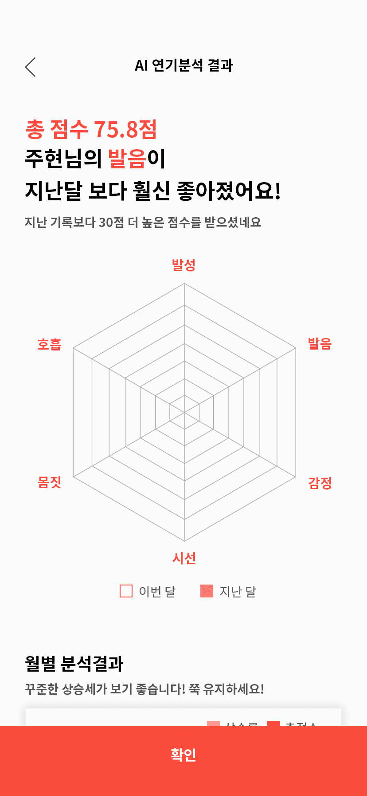
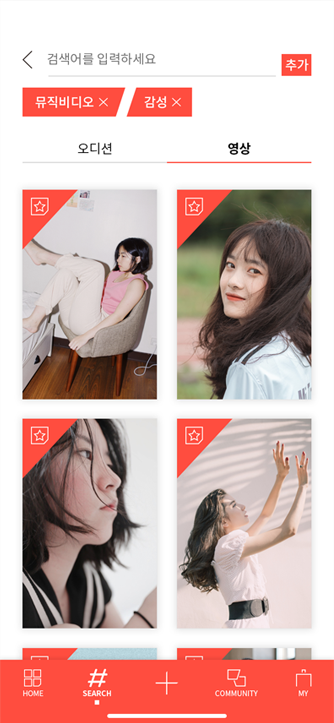
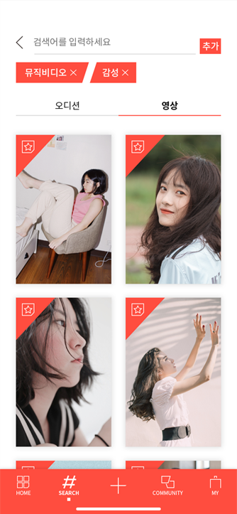

배우와 제작자의 사이를 숏-컷!
오프라인으로 진행되었던 기존의 프로필 투어는 이제 그만,
숏폼으로 짧은 시간 안에 배우와 제작자가 만날 수 있는 숏컷 애플리케이션입니다.
자기 PR을 할 수 있는 기회가 없는 무명배우들이 직접적으로
'자신의 연기를 어필할 수 있는 방법'과 캐스팅에 어려움을 겪고 있는
제작자들이 '원하는 배우를 보다 편리하게 구하기 위한 방법'은 없을까?
라는 고민에서 시작하였습니다.

자신의 존재를 알리기 위해 발로 뛰며 오프라인 프로필 투어를 하는 배우들
새롭게 생겨난 '프로필 투어 대행 업체'
자기PR 조차 할 기회가 없는 현실.
배우를 섭외할 때, 어떤 점이 어려우셨나요?
배우 모집 시 프로필을 관리할 때 느낀 불편한 점
환경분석과 설문조사, 인터뷰를 통해 사용자들이 느끼는 문제점을 토대로 각각의 니즈를 도출하였습니다.
저희는 오프라인으로 이루어지던 비효율적인 구인구직 형태를 온라인으로 빠르게 제공하고자 하였습니다.
배우는 숏폼(짧은 영상)으로 자신을 어필하고, 제작사는 빠르게 영상을 확인 후 캐스팅을 진행할 수 있도록 기획한 와이어 프레임입니다.
‘짧은’의 의미를 가진 SHORT와 ‘슬레이트를 치는 의성어’이자 ‘자르다’의 중의적 의미를 가진 CUT을 합친 말로,
배우와 제작자가 컨택하는 과정을 짧게 자른다는 의미를 내포하고있습니다.
강렬한 인상을 남기는 배우의 열정과 에너지를 표현하는 레드 계열, 책임감을 가지고 선구자의 역할을 하는 제작자의 믿음직한 모습을 표현하는
블루 계열을 메인 컬러로 두 타겟층의 조화로움을 의미합니다.
슬레이트 모양과 촬영 시 초점이 잡히는 아이콘 형태에서 디자인 모티브를 얻어 활용성이 높은 브랜드 아이덴티티로 형성할 수 있도록 제작하였습니다.
정사각형 모양에 맞춘 각진 형태의 아이콘으로 제작하였으며, 한 쪽 모서리를 깎아 일관된 아이콘 스타일을 표현하였습니다.
숏컷이 목표로 하는 '배우와 제작자의 빠른 컨택'을 나타내고자 속도감을 느낄 수 있는 사선 모티브를 디자인 요소에 적극적으로 활용하였습니다.
내 취향대로 빠르게!
배우는 메인에서 오디션을 먼저 제공해 빠른 컨택을 돕고,
제작자는 영상을 먼저 제공해 원하는 배우를 빠르게 찾을 수 있습니다.
원하는 걸 골라봐~
사용자는 목적에 따라
배우와 제작자의 계정으로 로그인이 가능하며,
배우 페이지와 제작자 페이지에서
각각의 메인 컬러를 제공합니다.
배우는 자신의 연기를 담을 수 있는 영상을
촬영할 수 있으며, 다양한 대본을 통해
여러 장르의 연기를 시도해 볼 수 있습니다.

내 영상을 돋보이게!
촬영 후에는 다양한 BGM과 필터, 그리고 컷 편집 기능을
이용해 영상의 분위기를 극대화 시켜 몰입도를 높일 수
있습니다.
어느 부분을 연습해볼까?
AI 기술로 다양한 연기분석 통해 세부적인 코칭을 받아,
종합 분석 결과를 기록하여 배우 자신의 연기력을 점검할 수 있습니다.
 

해시태그로 찾아보자!
원하는 배우와 오디션을 쉽게 찾을 수 있도록
여러 개의 해시태그를 추가하여 검색 해보세요.
검색한 배우와 오디션을 스크랩하여 모아 볼 수도 있습니다.


AI 연기분석 진행과 지원한 오디션을
관리할 수 있습니다.
자신이 등록한 오디션 관리 및
지원한 배우들을 확인하고
온라인 오디션을 진행할 수 있습니다.

Team. 범이묘삼(T2R3)


 
